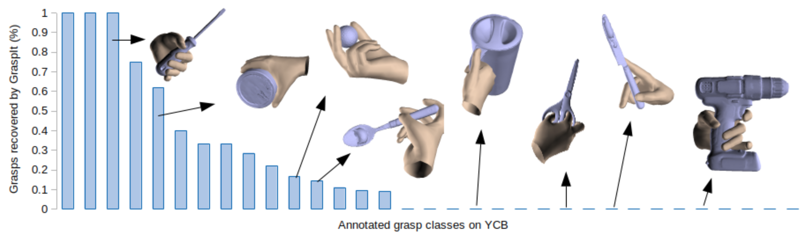
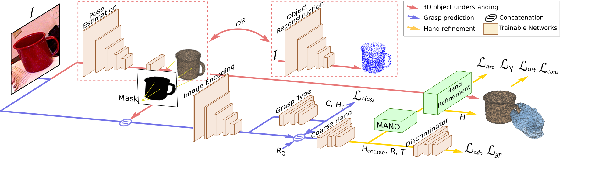

GanHand: Predicting Human Grasp Affordances in Multi-Object Scenes
Enric Corona, Albert Pumarola, Guillem Alenyà, Francesc Moreno-Noguer, Grégory Rogez


Abstract
The rise of deep learning has brought remarkable progress in estimating hand geometry from images where the hands are part of the scene. This paper focuses on a new problem not explored so far, consisting in predicting how a human would grasp one or several objects, given a single RGB image of these objects. This is a problem with enormous potential in \eg augmented reality, robotics or prosthetic design. In order to predict feasible grasps, we need to understand the semantic content of the image, its geometric structure and all potential interactions with a hand physical model.
To this end, we introduce a generative model that jointly reasons in all these levels and 1) regresses the 3D shape and pose of the objects in the scene; 2) estimates the grasp types; and 3) refines the 51-DoF of a 3D hand model that minimize a graspability loss. To train this model we build the YCB-Affordance dataset, that contains more than 133k images of 21 objects in the YCB-Video dataset. We have annotated these images with more than 28M plausible 3D human grasps according to a 33-class taxonomy. A thorough evaluation in synthetic and real images shows that our model can robustly predict realistic grasps, even in cluttered scenes with multiple objects in close contact.
YCB-Affordance Dataset
We release a large-scale dataset of manually annotated grasps on the 58 objects of the YCB Benchmark Set. This contain grasps such as those in the following image, which are not found by Graspit Simulator or any other automatic pipeline. For each grasp, we annotate tha hand position, the hand pose and the grasp type according to the grasp taxonomy of Feix et al. We transfer these grasps to the 92 Video sequences from the YCB-Video dataset, and remove those grasps that are not feasible, due to interpenetrations with other objects or with the table. The dataset contains 133.936 frames, with more than 28M of realistic grasps. 
GanHand
GanHand takes a single RGB image of one or several objects and predicts how a human would grasp these objects naturally. Our architecture consists of three stages. First, the objects' shapes and locations are estimated in the scene using an object 6D pose estimator or a reconstruction network (red). The predicted shape is then projected onto the image plane to obtaina segmentation mask that is concatenated with the input image and fed to the second sub-network for grasp prediction (blue). Finally, werefine the hand parameters and obtain hand final shapes and poses using a differentiable parametric model MANO (yellow). The model is trained using adversarial, interpenetration, classification and optimization losses, indicated in bold. 
Results

Publication
GanHand: Predicting Human Grasp Affordances in Multi-Object Scenes
E. Corona, A. Pumarola, G. Alenyà, F. Moreno-Noguer; G. Rogez
in Conference on Computer Vision and Pattern Recognition (CVPR), 2020 (Oral)
Project Page Paper Dataset Code Bibtex
@inproceedings{corona2020ganhand,
Author = {Enric Corona and Albert Pumarola and Guillem Aleny{\`a} and Moreno-Noguer, Francesc and Rogez, Gr{\'e}gory},
Title = {GanHand: Predicting Human Grasp Affordances in Multi-Object Scenes},
Year = {2020},
booktitle = {CVPR},
}
Citation
@inproceedings{corona2020ganhand,
Author = {Enric Corona and Albert Pumarola and Guillem Aleny{\`a} and Moreno-Noguer, Francesc and Rogez, Gr{\'e}gory},
Title = {GanHand: Predicting Human Grasp Affordances in Multi-Object Scenes},
Year = {2020},
booktitle = {CVPR},
}